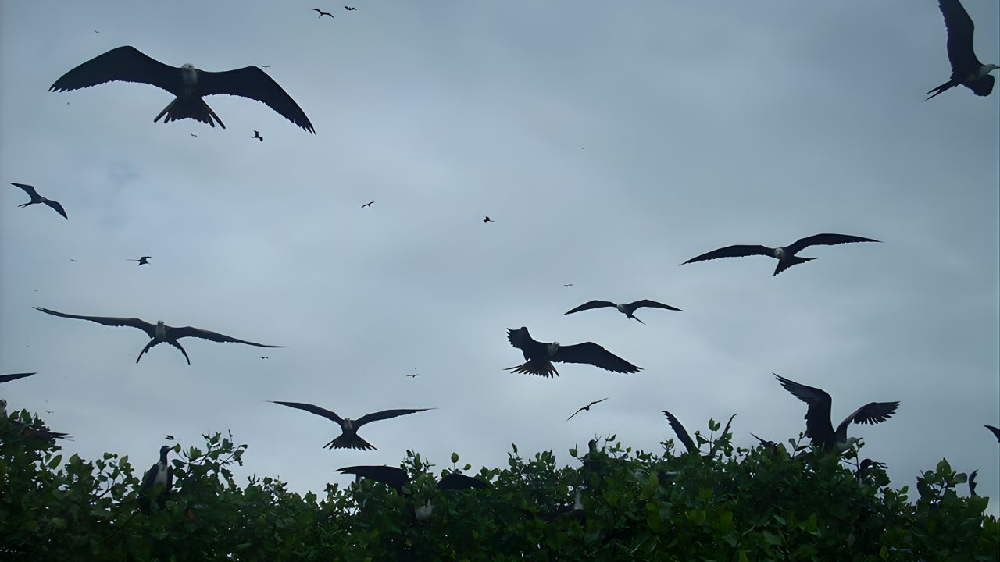
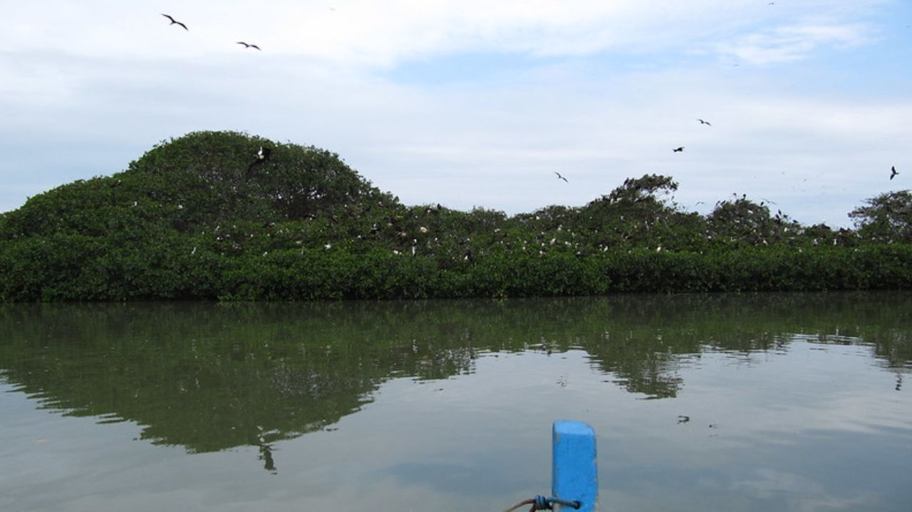
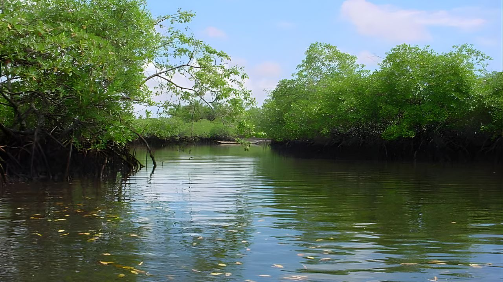

Manglares de Tumbes



El Santuario Nacional de los Manglares está protegido por el SERNANP para prevenir la contaminación, la deforestación y preservar las tradiciones locales.
Experiencia Tumbes: ¡Explora exuberantes manglares, saborea la cocina local y conoce una vida silvestre fascinante!
Detalle
Los Manglares de Tumbes sirven como refugio para el vulnerable Cocodrilo Americano, así como para muchas otras especies de peces, mamíferos y aves. Viajar a través de los canales en canoa o kayak brinda a los visitantes una experiencia cercana de esta maravilla natural. Después, disfruta de un almuerzo en el bosque seco, seguido de una visita al pintoresco pueblo pesquero de Puerto Pizarro, donde el Ministerio de Pesca de Perú mantiene un zoológico que protege aves migratorias y más de 300 cocodrilos. Los manglares y el pueblo de Puerto Pizarro son excelentes lugares para visitar durante todo el año.
Incluye:
- Recojo de tu hotel en Los Órganos, Máncora o Punta Sal
- Transporte privado
- Entradas incluidas
- Almuerzo en el bosque seco
- Guía profesional de habla inglesa/hispana
No Incluye:
- Extras y propinas.
- Alojamiento